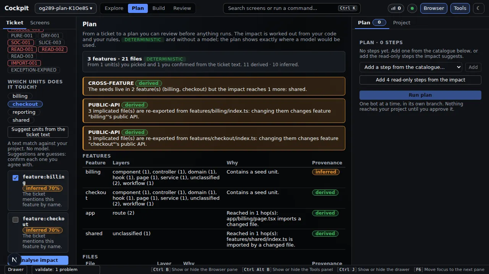
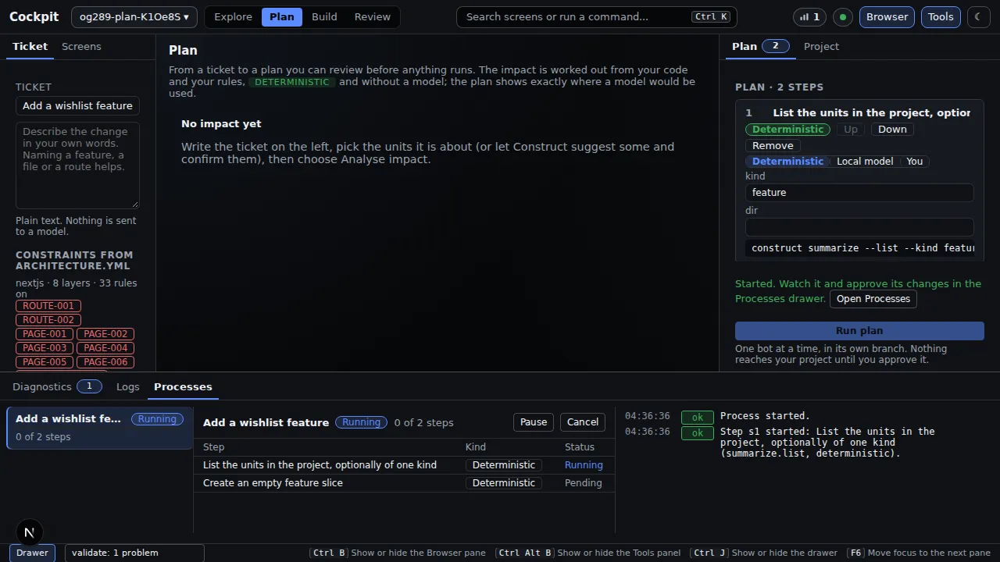
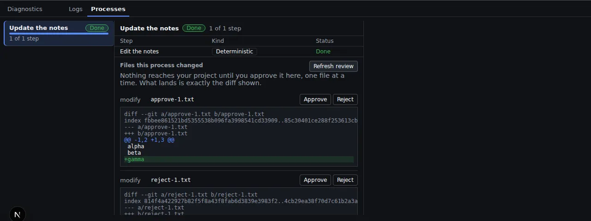

Cockpit
Plan, run in a branch, approve per file
From a described change to a reviewed plan to changes you approve one file at a time.
Problem. An AI agent edits your files directly, and you only find out what it touched afterwards, in a change you did not ask for. Rolling it back means untangling it from your own work.
Do this#
Open the Plan screen and describe the change in your own words, or name a feature, file or route. The Cockpit shows what the change will touch, then lists the steps, each marked Deterministic, Local model or You. Press Run plan.
This page shows the Cockpit only. The same tools are available from the command line and as a Core API.
1. Describe the change, see what it touches#
You can press Suggest units from the note text. That is a plain text match, no model, and every suggestion is shown as a guess (inferred, with a confidence) for you to confirm or untick. The rules your project enforces are listed beside the text, so the limits are visible while you plan.
Analyse impact then shows what the change reaches: features, files, and warnings such as "the seeds live in 2 features but the impact reaches 1 more". Each row is marked derived (worked out from your code) or inferred (reached only through a guess).

2. Build the plan and run it#
Add steps from the catalogue, or add the read-only steps the analysis suggests. Every step names a real Construct command and who does it. A plan that names a command Construct does not have is refused, with the list of real ones.
Run plan starts one bot. It works in its own copy of the repository, on its own branch, and every step that succeeds becomes a commit there. The Processes drawer narrates the run and lets you pause or cancel. A failed step stops the plan and its half-written files are reset. Cancelling or failing leaves your own files as they were.

You get#
When the run finishes, Files this process changed lists every file the bot wrote, with the exact difference. There is no "approve all": you approve or reject each file by name.

The gate refuses, with a reason, anything it should not apply:
- a file outside what the plan said it would touch;
- a protected path, a symlink, or a region marked frozen;
- a file you have changed yourself since (your work is never overwritten);
- a difference that is not the one you were shown (approval quotes the fingerprint of what was on screen).
After applying, the project is checked again and any new violation is reported. Your decision, who made it and when, is recorded.
Why it matters#
You review a small, exact change instead of untangling a surprise, and nothing reaches your project until you say so.
| You get | Where to see it |
|---|---|
| A plan you can read before anything runs | step 2: each step names its command and who does it |
| What a change touches, worked out from your code, with guesses labelled | derived and inferred in step 1 |
| Your own files untouched until you approve | the bot's own copy and branch |
| A decision per file, on the exact difference | "You get" above |
Checked against commit 081150b on 2026-09-20 (wording revised for plain language on the same day). Screenshots come from the project's own Playwright runs of these screens.